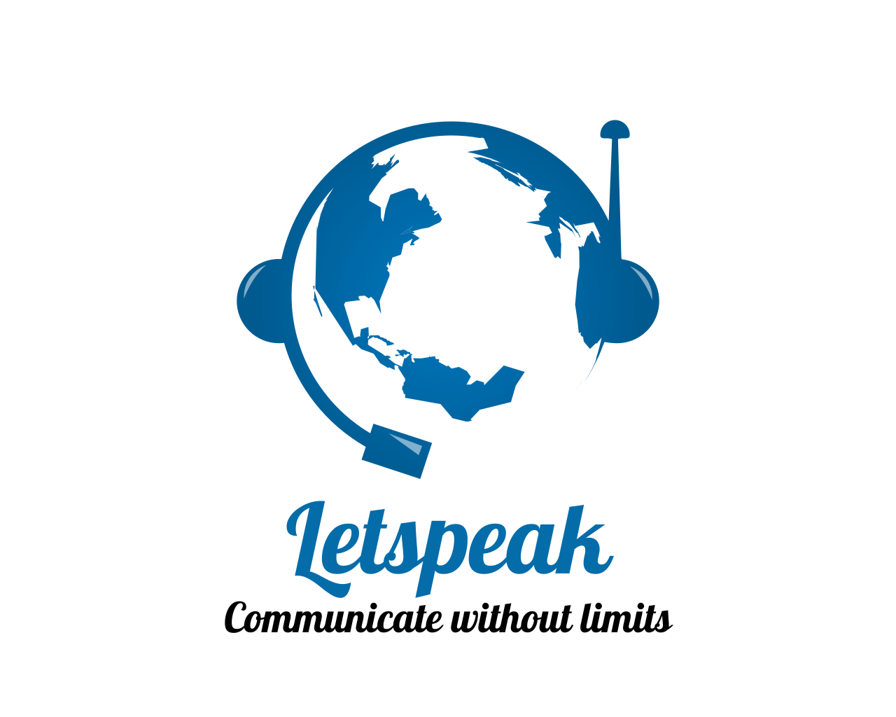
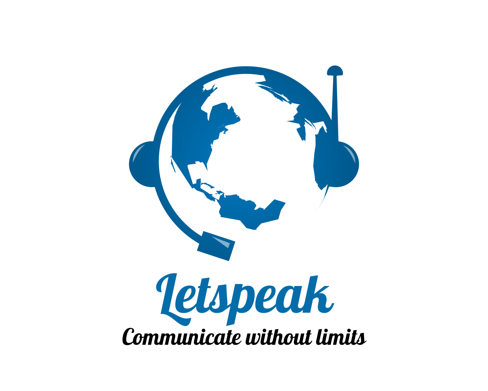

Über mich auf einen Blick

Hallo, ich heiße Ilona Sobczak
Vielen Dank für Ihr Interesse. Zunächst möchte ich mich kurz vorstellen: Ich verfüge über die doppelte Staatsbürgerschaft (US-amerikanisch / belgisch). Gebürtig stamme ich aus Belgien und bin 1993 aus beruflichen Gründen in die Vereinigten Staaten gezogen. Da ich mehr als die Hälfte meines Lebens in den USA gelebt und gearbeitet habe, bin ich dreisprachig (Deutsch/Französisch/Englisch), was mein größter Vorteil als Übersetzer und Dolmetscher ist. Im Jahr 2002 erhielt ich durch meinen Arbeitgeber eine unbefristete Aufenthaltserlaubnis und 2009 die US-Staatsbürgerschaft auf eigene Initiative.
Ausbildung
- 19/11/2024: Erfolgreiches Bestehen der schriftlichen Prüfung, die vom „State Courts Administrator Office of Florida“ (Court Interpreter Certification and Regulation Program) durchgeführt wurde - Vom Zertifizierungsausschuss für Gerichtsdolmetscher (Court Interpreter Certification Board / CICB) mit Wirkung vom 17/12/2024 als registrierte Dolmetscherin für Deutsch anerkannt und im Verzeichnis der Gerichtsdolmetscher für das Florida State Courts System seit dem 28. Oktober 2025 als Zertifizierte deutschsprachige Gerichtsdolmetscherin (Zertifizierungsnummer: 25-00699) infolge der Ausstellung des „ACTFL Superior German & English Proficiency Certificate", jeweils am 26/02/2025 und 27/10/2025, eingetragen.
- 02/14/2023: Erfolgreiches Bestehen der „Florida Teacher Certification Examination“ in Französisch (K-12)
- 06/23/1997: Belgische Staatsprüfung: Übersetzer / Revisor – Ref.: 68022521886 / CFG97045
- 1991–1992: Pädagogische Zertifizierung / „Institut Saint Laurent“, Lüttich, Belgien
- 1987–1991: "Institut Libre Marie Haps / Université Catholique de Louvain-la-Neuve", Brüssel, Belgien : „Licencié-Traducteur" (als "Master's in Translation" in den USA anerkannt)
- Juli 1991: Stipendium: Germanische Sprachen, Humboldt Universität, Berlin, Deutschland
Berufserfahrung
- 2023: US-Regierungszulassung für IT Tier 3 / Level II (Zugang zu Verschlusssachen).
- 13/03/2023 – 05/31/2023: Langzeitvertretung als Französischlehrerin an der Community School of Naples
- Seit dem 1. August 2021: Selbstständig als freiberufliche Übersetzerin und Dolmetscherin (Deutsch/Französisch >< Englisch).
- 03/03/1998 – 03/06/2021: ASG Technologies, Inc. (Naples, Florida, USA): Executive Assistant & Translator; Senior HR Translator - zuständig für personelle/juristische Übersetzungen (FR/DE >< EN).
- 1991 – 1998: Stellen als Übersetzer und Revisor bei J.P. Morgan Trust Company of NY, Europäisches Komitee für Normung (Comité Européen de Normalisation / CEN), Rechtsanwaltskanzlei “Cleary, Gottlieb, Steen & Hamilton“ (Brüssel, Belgien); Sprachlehrer an der Hochschule für Wirtschaftswissenschaften „Institut Sainte Marie“ in Lüttich, Belgien.
Dienstleistungen
Als dreisprachige Übersetzerin (Deutsch/Französisch >< Englisch & Deutsch >< Französisch) mit über 30 Jahren Erfahrung bin ich insbesondere im Bereich juristischer Übersetzungen tätig. Darüber hinaus biete ich Dolmetscherdienste, insbesondere konsekutives Dolmetschen bei Zeugenaussagen unter Eid, sowie Privatunterricht an. Meine Arbeit zeichnet sich durch Exzellenz, Engagement und unübertroffene Präzision, Detailtreue und zeitnahe Reaktionsfähigkeit aus.
„Wenn Du mit einem Menschen in einer Sprache sprichst, die er versteht, geht das in seinen Kopf. Wenn Du mit ihm in seiner eigenen Sprache sprichst, berührt es sein Herz.“ – Nelson Mandela
My Clients Include


 



„Nochmals vielen Dank für Ihre Bemühungen. Ihre Unterstützung war äußerst hilfreich für diesen Fall.“
- Sean M., Rechtsberater, Anwaltskanzlei J. Christopher Norris
„Vielen Dank, Ilona, die Zusammenarbeit mit Dir hat uns viel Freude bereitet und wir hoffen, dass wir Deine Dienstleistungen in Zukunft wieder in Anspruch nehmen können!“
- David R., International Justice Mission
„Sie sind eine großartige Dolmetscherin und wir hoffen, dass wir in Zukunft wieder mit Ihnen zusammenarbeiten können!“
- Melissa K., Rechtsanwältin, Rafool PLLC
Kontaktinformationen
Tel.: +1 239 249 9862
E-Mail: ilonarsobczak@gmail.com